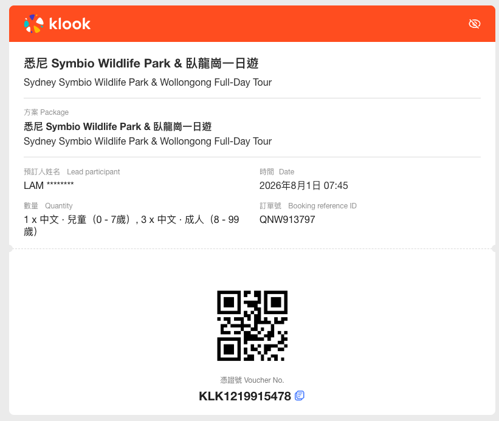

🇦🇺 悉尼2026之旅
行程日期：2026/07/27 - 08/03 (3大1小)

🏨 住宿： Mantra 2 Bond Street Sydney (訂單編號: 2607280504)
✈️ 航班： 去程 CX161 / 回程 CX138
✈️ 航班： 去程 CX161 / 回程 CX138
📅 7月27日 (一) ｜ 出發
- 21:35：乘國泰航空 CX161 離港前往悉尼，機上休息。
📅 7月28日 (二) ｜ 抵達・岩石區・歌劇院
- 08:40：抵達悉尼機場，搭乘火車 T8 線至 Wynyard Station。
- 10:30：前往 岩石區 (The Rocks) 的 Pancakes on The Rocks 享用經典 Brunch。
- 14:00：入住 Mantra 2 Bond Street 稍作午睡休息。
- 15:30：參觀 QVB (維多利亞女王大廈) 與 Westfield 百貨。
- 17:30：步行至 悉尼歌劇院 (Sydney Opera House) 欣賞黃昏與夜景。
📅 7月29日 (三) ｜ 市集・美食・教堂
- 11:00：搭輕軌前往 新魚市場 (New Sydney Fish Market) 品嚐海鮮午餐。
- 13:30：前往 Paddy's Markets Haymarket 逛市集、買伴手禮。
- 15:30：步行參觀 聖母主教座堂 (St Mary's Cathedral) 與 海德公園。
📅 7月31日 (五) ｜ 彈性玩樂日 (TBC 三選一)
- 全天：依當天體力與天氣彈性選擇：
1. Taronga Zoo (塔龍加動物園)
2. Bondi Beach (邦代海灘)
3. 冬季 賞鯨之旅 (Whale Watching)
📅 8月1日 (六) ｜ 海岸動物・達令港煙火夜
- 白天：參加 Wildlife Park & Coastal Tour 一日遊 🔗 [點擊前往 Klook 預訂]。
- 19:00：返回市區，於達令港 Fratelli Fresh 享用義式晚餐。
- 20:30：觀賞 達令港 (Darling Harbour) 週六免費煙火表演 🔗 [點擊查看官方活動詳情]。

📅 8月2日 (日) ｜ 最後採購與返港
- 11:00：飯店退房，寄存行李。
- 下午：市區最後自由活動與購物。
- 18:55：前往機場，準備搭乘 CX138 (21:55 起飛) 返回香港。
📅 8月3日 (一) ｜ 平安抵港
- 05:10：安全抵達 香港國際機場，旅程圓滿結束！